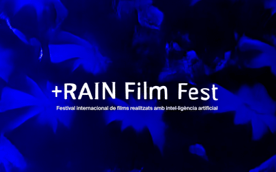

-
Chemical Ecosystem from Yolanda Uriz

From June 15th to 17th, Hac Te and the recently created Red ACTS
-
Andy Gracie wins the Randa Art|Science Residency

We are thrilled to announce the Randa Art|Science Residency
-
Open call for films generated with AI
 RAIN Film Fest is the first European festival of films generated with artificial intelligence